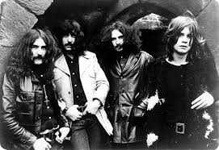

|  | ||||
| TÍTULO | LETRA |
| Paranoid |
Finished with my woman 'cause she Couldn't help me with my mind People think I'm insane because I am frowning all the time All day long, I think of things But nothing seems to satisfy Think I'll lose my mind if I don't Find something to pacify Can you help me Occupy my brain? Whoa, yeah I need someone to show me The things in life that I can't find I can't see the things that make true happiness I must be blind Make a joke and I will sigh And you will laugh and I will cry Happiness, I cannot feel And love to me is so unreal And so, as you hear these words Telling you now of my state I tell you to enjoy life, I wish I could But it's too late |
| N.I.B. |
Oh, yeah Some people say my love cannot be true Please, believe me, my love, and I'll show you I will give you those things you thought unreal The Sun, the Moon, the stars, all bear my seal Oh, yeah Follow me now and you will not regret Leaving the life you led before we met You are the first to have this love of mine Forever with me till the end of time Your love for me has just got to be real Before you know the way I'm going to feel I'm going to feel I'm going to feel Oh, yeah Now I have you with me under my power Our love grows stronger now with every hour Look into my eyes, you'll see who I am My name is Lucifer, please, take my hand Oh, yeah Follow me now and you will not regret Leaving the life you led before we met You are the first to have this love of mine Forever with me till the end of time Your love for me has just got to be real Before you know the way I'm going to feel I'm going to feel I'm going to feel Oh, yeah Now, I have you with me under my power Our love grows stronger now with every hour Look into my eyes, you'll see who I am My name is Lucifer, please, take my hand |
| War Pigs |
Generals gathered in their masses Just like witches at black masses Evil minds that plot destruction Sorcerers of death's construction In the fields, the bodies burning As the war machine keeps turning Death and hatred to mankind Poisoning their brainwashed minds Oh, Lord, yeah! Politicians hide themselves away They only started the war Why should they go out to fight? They leave that all to the poor, yeah! Time will tell on their power minds Making war just for fun Treating people just like pawns in chess Wait till their judgment day comes, yeah! Now, in darkness, world stops turning Ashes where their bodies burning No more war pigs have the power Hand of God has struck the hour Day of Judgment, God is calling On their knees, the war pigs crawling Begging mercies for their sins Satan, laughing, spreads his wings Oh, Lord, yeah! |
| Changes |
I feel unhappy I feel so sad I've lost the best friend That I ever had She was my woman I loved her so But it's too late now I've let her go I'm going through changes I'm going through changes We shared the years We shared each day In love, together We found the way But soon, the world Had its evil way My heart was blinded Love went astray I'm going through changes I'm going through changes It took so long To realise And I can still hear Her last goodbyes Now, all my days Are filled with tears Wish I could go back And change these years I'm going through changes I'm going through changes |
| Sabbra Cadabra |
Feel so good, I feel so fine Love that little lady always on my mind She gives me lovin' every night and day Never gonna leave her Never going away Someone to love me You know she makes me feel alright Someone who needs me Love me every single night Feel so happy since I met that girl When we're making love It's something out of this world Feels so good to know that she's all mine Going to love that woman till the end of time Someone to live for Love me till the end of time Makes me feel happy Good to know that she's all mine Lovely lady make love all night long Lovely lady never do me no wrong I don't wanna leave ya I never wanna leave ya Anymore no more Lovely lady Mystifying eyes Lovely lady She don't tell me no lies I know I'll never leave ya I'm never gonna leave ya Anymore, no more |